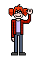
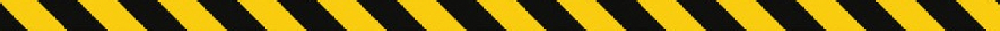

Welcome To My...
(Teto's) WebPage

"Click Here To Sign My Guest Book"
You are the
visitor since August 4.
Heavily under construction. Bear with me, please!

Why hello, hello. If you're reading this, you are among the lucky few who've stumbled upon my strange little corner of the 'net. Congrats! If your first thought is, "why on Earth does Teto have her own webpage," well, what better way is there to freely express myself? If your second thought is, "why the heck is Teto some Random Nature Guy," or even "how does nature have anything to do with Teto, the virtual utauloid," well... can't a girl have hobbies?